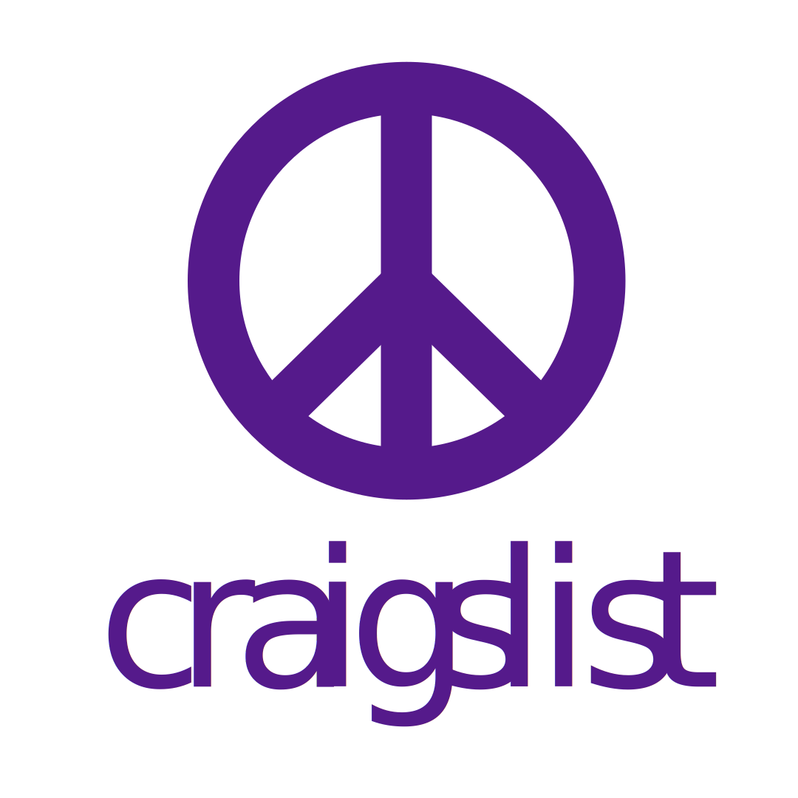

Craigslist Redesign
School ProjectNovember 2019
In a team of five fellow students, we redesign the look and feel of Craigslist's home page and one other page of our choosing; we choose the job page. We used many UX principles and practices to accomplish our goal. The primary goal of the project was to identify and see the potential of Craigslist layout.
My role on this project was team leader and lead graphic designer. I comtributed to every step of this project, managed the team, and designed anything the needed drawn.

Proto-Persona
In a grand project where many different people could use the website, it can be hard to create a design if the team is trying to accomendate everyone. Our remedy was to create a proto-persona. Meet John Smith. He is a college student looking for a job once he is out of college. The proto-persona was there to remind us who we are designing this website for.
Competitive Review
Looking at competitors is a great way to save time and see where they suceed and where they fail. We focused our view of existing job searching websites to gain ideas. Many of the websites used a two column layout with the job opportunities on the left and job details on the right. So with that information in mind, we could start the ideation/design process.
Mood Boards
We did the research and made the proto-persona, now we just need to create a new and unique website design. We ended up creating three very different designs to see what route would be the best. A conservative design that is clear and resembles other websites' designs. An exploratory design that was very unique and out there. And an innovative design that is a blend of new ideas and old concepts. After comparing all of our mood boards, we end up going with the conservative design as it was user friendly for new users while still understandable for older users.
Sketches
Armed with everything we needed, we sketched out what the home and job page would look like. For the home page, we knew we had to condence all the links into dropdown menus. Otherwise the page is just too clutered. We still wanted the feel of Craigslist, while being nothing like the old design. The job page was simple to design as we knew it was going to be a two column setup with a filter control for easy use by new and old users.
Prototype
Once we were happy with sketches, I went into Adobe Illustrator and designed both pages. Using Craigslist's color palette and clean page layout, the pages turnout with Craigslist feel but a modern look. No functional prototype was created for this project as we were not commisioned by Craigslist to create these designs. The project was to gain a better grasp of the UX design process.
© 2020 · Alan McBee · Updated: Febuary 2020